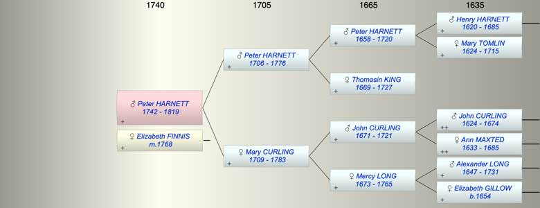

| [Index] |
| Peter HARNETT (1742 - 1819) |
|  |
| b. 1742 at Lydden |
| m. 07 Apr 1768 Elizabeth FINNIS at Lydden |
| d. 1819 at Lydden aged 77 |
| Parents: |
| Peter HARNETT (1706 - 1776) |
| Mary CURLING (1709 - 1783) |
| Siblings (5): |
| Mary HARNETT (1737 - ) |
| Henry HARNETT (1738 - 1740) |
| John HARNETT (1740 - ) |
| Elizabeth HARNETT (1744 - 1744) |
| Mercy HARNETT (1746 - ) |
| Events in Peter HARNETT (1742 - 1819)'s life | |||||
| Date | Age | Event | Place | Notes | Src |
| 1742 | Peter HARNETT was born | Lydden | bap Lydden 25 Jul 1742 ex FS | ||
| 07 Apr 1768 | 26 | Married Elizabeth FINNIS | Lydden | Note 1 | |
| 10 May 1776 | 34 | Death of father Peter HARNETT (aged 70) | St Laurence | Note 2 | |
| 02 Nov 1783 | 41 | Death of mother Mary CURLING (aged 74) | St Laurence | aged 73, ex MI | |
| 1819 | 77 | Peter HARNETT died | Lydden | of Lydden Court | |
| Created on a Mac™ using iFamily for Mac™ on 8 Oct 2023 |